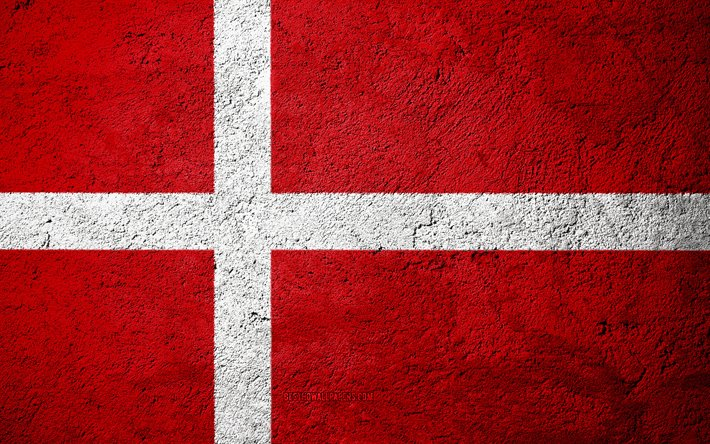

Danemarca
Democrație socială
Acasă
Aspecte ale geografiei fizice
Localizare
Relieful și Clima
Flora și Fauna
Demografie
Date generale
Cultura și civilizație
Orașele principale
Economia, sistemul politic și armata
Economia
Sistemul politic
Armata
Galerie


_(cropped).jpg)
 (1).jpg)